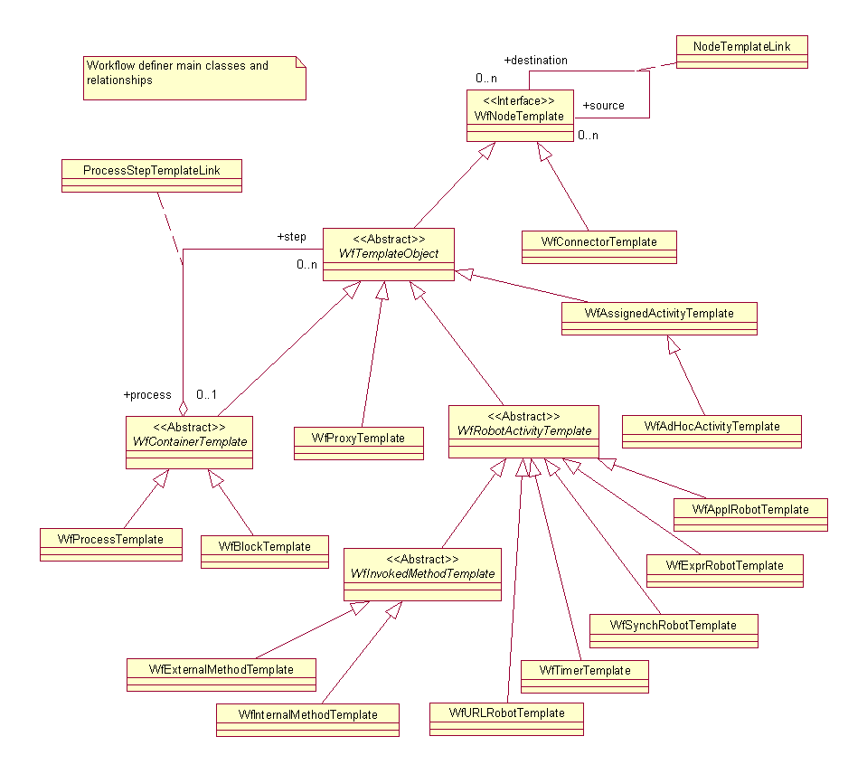

See: Description
| Interface | Description |
|---|---|
| WfProcessDefinition |
This class is supported so it can be queried against and passed as arguments to
other supported APIs like createProcess.
|
| Class | Description |
|---|---|
| _WfProcessTemplate | |
| _WfTemplateObject | |
| ProcessDataInfo |
The
ProcessDataInfo class provides information about the
structure of ProcessData sets for the generated execution objects. |
| TimeToElapse |
Models elapsed time in workflows.
|
| WfAssignedActivityTemplate |
Template for creation of assigned activities.
|
| WfProcessTemplate |
A
WfProcessTemplate represents a template for a specific
workflow process; it is used to create instances of a workflow process. |
| WfProcessTemplateMaster |
Use the
newWfProcessTemplateMaster static factory method(s),
not the WfProcessTemplateMaster constructor, to construct
instances of this class. |
| WfTemplateObject |
WfTemplateObject is the base class for the workflow definition
objects. |
| WfVariableInfo |
Simple structure containing information pertaining to a execution object
variable.
|
The base class for the workflow template objects is the WfTemplateObject class.� It contains identification attributes and meta information about the data manipulated by the execution object. Its subclasses � WfProcessTemplate, WfRobotActivityTemplate, WfAssignedActivityTemplate, WfAdhocActivityTemplate, and WfProxyTemplate � are templates (factories) used to generate WfProcess, WfRobotActivity, WfAssignedActivity, WfAdhocActivity, and WfProcessReference objects, respectively.
Also shown in the following figure is the relationship of WfProcessTemplate and other template objects. A process template contains zero or more templates (activity or process templates).
WfRequester objects have no template. They are generated dynamically when the WfProcess is created, based on information contained in the processes involved.� The mapping between local and global variables does not belong to the activity definition. It is part of the relationship between a process and a step. They become part of the activity execution object when it is instantiated. In this way, an activity template can be reused independently of the process in which it will be used.�

Workflow Definer package
Diagram